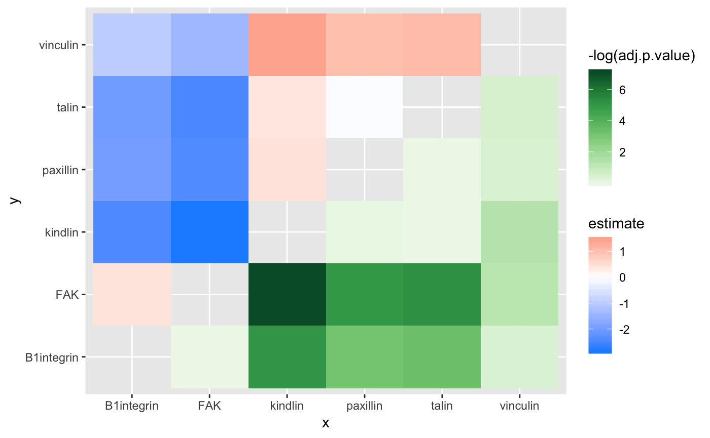
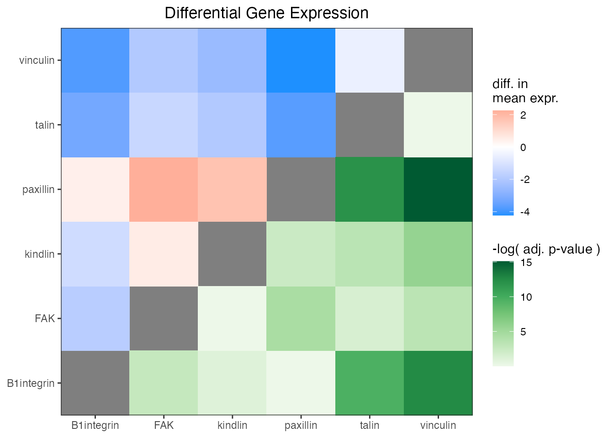

vignettes/ggasym-stats.Rmd
ggasym-stats.RmdOne of the great uses of ‘ggasym’ is to plot two values from the results of a multi-way statistical test. Each comparison is a cell, and two values can be used for the fills. Below I give brief examples and plot the differences in mean and the p-value on the symmetric matrix.
The data will be modeled as expression values of 6 genes, each with 10 measurements. I will then as if any of them have different levels of expression.
n_reps <- 10 # number of measurements per gene
expt_std_dev <- 1.5 # std. dev. of measurements
genes <- c("FAK", "talin", "paxillin", "vinculin", "B1integrin", "kindlin")
# "real" expression levels to be used as the mean in `rnorm`
real_expression_levels <- sample(seq(1, 5, 0.1), length(genes), replace = TRUE)
# create a tibble
expr_data <- tibble(gene = rep(genes, n_reps),
real_expr = rep(real_expression_levels, n_reps),
rep_num = sort(rep(1:n_reps, length(genes))))
# add in the measured expression values as a normal distribution around the mean
expr_data <- expr_data %>%
mutate(expt_expr = rnorm(nrow(expr_data),
mean = real_expr,
sd = expt_std_dev))
head(expr_data)
#> # A tibble: 6 x 4
#> gene real_expr rep_num expt_expr
#> <chr> <dbl> <int> <dbl>
#> 1 FAK 4.6 1 6.51
#> 2 talin 2 1 2.62
#> 3 paxillin 2.5 1 0.190
#> 4 vinculin 3.3 1 1.91
#> 5 B1integrin 4.7 1 4.26
#> 6 kindlin 1.8 1 1.79I then use an ANOVA to test if there are any differences between any of the comparisons of gene expression.
res_aov <- aov(expt_expr ~ gene, data = expr_data)
broom::tidy(res_aov)
#> # A tibble: 2 x 6
#> term df sumsq meansq statistic p.value
#> <chr> <dbl> <dbl> <dbl> <dbl> <dbl>
#> 1 gene 5 68.7 13.7 6.45 0.0000911
#> 2 Residuals 54 115. 2.13 NA NAWith a very low p-value from the ANOVA, I run the Tukey post-hoc test to find which genes are at different levels.
tukey_res <- TukeyHSD(res_aov)
tukey_res
#> Tukey multiple comparisons of means
#> 95% family-wise confidence level
#>
#> Fit: aov(formula = expt_expr ~ gene, data = expr_data)
#>
#> $gene
#> diff lwr upr p adj
#> FAK-B1integrin 0.42786034 -1.5000734 2.35579405 0.9859350
#> kindlin-B1integrin -2.41258042 -4.3405141 -0.48464671 0.0064520
#> paxillin-B1integrin -1.96884001 -3.8967737 -0.04090630 0.0426958
#> talin-B1integrin -2.02075178 -3.9486855 -0.09281807 0.0347905
#> vinculin-B1integrin -0.97209337 -2.9000271 0.95584034 0.6721614
#> kindlin-FAK -2.84044076 -4.7683745 -0.91250705 0.0008182
#> paxillin-FAK -2.39670035 -4.3246341 -0.46876664 0.0069377
#> talin-FAK -2.44861212 -4.3765458 -0.52067841 0.0054659
#> vinculin-FAK -1.39995371 -3.3278874 0.52798000 0.2803309
#> paxillin-kindlin 0.44374040 -1.4841933 2.37167411 0.9834395
#> talin-kindlin 0.39182864 -1.5361051 2.31976234 0.9905661
#> vinculin-kindlin 1.44048704 -0.4874467 3.36842075 0.2513411
#> talin-paxillin -0.05191177 -1.9798455 1.87602194 0.9999995
#> vinculin-paxillin 0.99674664 -0.9311871 2.92468035 0.6484209
#> vinculin-talin 1.04865841 -0.8792753 2.97659211 0.5976093Now I want to plot the estimate in the top-left and p adj in the bottom right. First, I must prepare the data for use with geom_asymmat() by passing the results of the Tukey post-hoc test to asymmetrise_stats(). You can see that it returns the data in a tibble with new columns x and y that are the result of splitting comparison.
asymmat_tib <- asymmetrise_stats(tukey_res)
head(asymmat_tib)
#> # A tibble: 6 x 8
#> term comparison estimate conf.low conf.high adj.p.value x y
#> <chr> <chr> <dbl> <dbl> <dbl> <dbl> <chr> <chr>
#> 1 gene FAK-B1integr… 0.428 -1.50 2.36 0.986 FAK B1int…
#> 2 gene kindlin-B1in… -2.41 -4.34 -0.485 0.00645 kindl… B1int…
#> 3 gene paxillin-B1i… -1.97 -3.90 -0.0409 0.0427 paxil… B1int…
#> 4 gene talin-B1inte… -2.02 -3.95 -0.0928 0.0348 talin B1int…
#> 5 gene vinculin-B1i… -0.972 -2.90 0.956 0.672 vincu… B1int…
#> 6 gene kindlin-FAK -2.84 -4.77 -0.913 0.000818 kindl… FAKFinally, I can plot the data using geom_asymmat().
ggplot(asymmat_tib, aes(x = x, y = y)) +
geom_asymmat(aes(fill_tl = estimate, fill_br = -log(adj.p.value))) +
scale_fill_tl_gradient2(low = "dodgerblue", high = "tomato") +
scale_fill_br_distiller(type = "seq", palette = "Greens", direction = 1)
And add a few styling changes with normal ‘ggplot2’ semantics.
ggplot(asymmat_tib, aes(x = x, y = y)) +
geom_asymmat(aes(fill_tl = estimate, fill_br = -log(adj.p.value))) +
scale_fill_tl_gradient2(low = "dodgerblue", high = "tomato",
guide = guide_colourbar(order = 1)) +
scale_fill_br_distiller(type = "seq", palette = "Greens", direction = 1,
guide = guide_colourbar(order = 2)) +
theme_bw() +
theme(panel.background = element_rect(fill = "grey50"),
panel.grid = element_blank(),
axis.title = element_blank(),
plot.title = element_text(hjust = 0.5)) +
labs(title = "Differential Gene Expression",
fill_tl = "diff. in\nmean expr.",
fill_br = "-log( adj. p-value )") +
scale_x_discrete(expand = c(0,0)) +
scale_y_discrete(expand = c(0,0))
One of the conclusions that can be drawn here is that the difference in expression of kindlin and FAK is the greatest and has a very low adjusted p-value. Thus, one of the conclusion is that kindlin is expressed at a lower level than FAK.
For more information, see the complete documentation at the ‘ggasym’ site.